import matplotlib.pyplot as plt
import xarray as xr
from dask.distributed import Client
from qagmire.data import (
get_weave_files,
read_fibre_table_nspec,
read_l1_data,
read_raw_data,
)
from qagmire.diagnostics import SkyNoiseDistributionCheck
from qagmire.diagnostics.sky_noise_distribution_check import (
plot_dist,
plot_hist,
plot_stack_over_single,
)Sky noise distribution check
Check that the error-normalised sky-subtracted flux in sky fibres resembles a standard Normal distribution.
Test GA-CALIB dataset
Stacked observations
tests_stack = SkyNoiseDistributionCheck(stack=True, n_processes=8)
tests_stack.run(folder="GA-CALIB")Locating and converting where necessary: 100%|██████████| 12/12 [00:00<00:00, 1502.84it/s]
Reading netCDF files... took 2.60 s. Size is 5296.042 Mb
Reading files: 100%|██████████| 12/12 [00:00<00:00, 21.36it/s]
Creating Dataset... took 0.09 s. Size is 4.738 Mb
Tests took 4.51 s to prepare (including reading data).
Tests took 5.56 s to perform.
mean_non_zero:
Is the mean of the normalised flux in sky fibres significantly different from zero?
stdev_non_unit:
Is the standard deviation of the normalised flux in sky fibres significantly different from unity?
ks_non_normal:
Does the distribution of normalised flux in sky fibres fail a KS test comparison with a standard Normal?
took 0.74 s. Size is 5296.042 Mb
Reading files: 0%| | 0/12 [00:00<?, ?it/s]Reading files: 8%|████████▋ | 1/12 [00:00<00:03, 2.95it/s]Reading files: 17%|█████████████████▎ | 2/12 [00:00<00:02, 4.22it/s]Reading files: 92%|██████████████████████████████████████████████████████████████████████████████████████████████▍ | 11/12 [00:00<00:00, 26.20it/s]Reading files: 100%|███████████████████████████████████████████████████████████████████████████████████████████████████████| 12/12 [00:00<00:00, 18.26it/s]
Creating Dataset... took 0.06 s. Size is 4.738 Mb
Tests took 5.35 s to prepare (including reading data).
Tests took 5.68 s to perform.
mean_non_zero:
Is the mean of the normalised flux in sky fibres significantly different from zero?
stdev_non_unit:
Is the standard deviation of the normalised flux in sky fibres significantly different from unity?
ks_non_normal:
Does the distribution of normalised flux in sky fibres fail a KS test comparison with a standard Normal?tests_stack.summary(by=["OBID", "CAMERA"], sort_by_total_fails=False)3 varieties of test and 114 tested elements per variety, for total of 342 tests.
333 tests failed (97.37%) and 9 tests passed (2.63%).| failed | total fails | ||||
|---|---|---|---|---|---|
| test | ks_non_normal | mean_non_zero | stdev_non_unit | ||
| OBID | CAMERA | ||||
| 12366 | BLUE | 10 | 10 | 7 | 27 |
| RED | 10 | 10 | 10 | 30 | |
| 12367 | BLUE | 9 | 8 | 9 | 26 |
| RED | 9 | 9 | 9 | 27 | |
| 12382 | BLUE | 9 | 9 | 9 | 27 |
| RED | 9 | 9 | 8 | 26 | |
| 12383 | BLUE | 10 | 10 | 10 | 30 |
| RED | 10 | 10 | 10 | 30 | |
| 12392 | BLUE | 9 | 9 | 8 | 26 |
| RED | 9 | 8 | 9 | 26 | |
| 12398 | BLUE | 10 | 9 | 9 | 28 |
| RED | 10 | 10 | 10 | 30 | |
Single observations
tests_single = SkyNoiseDistributionCheck(n_processes=8)
tests_single.run(folder="GA-CALIB")Locating and converting where necessary: 100%|██████████| 36/36 [00:00<00:00, 3385.99it/s]
Reading netCDF files... took 7.60 s. Size is 15887.744 Mb
Reading files: 100%|██████████| 36/36 [00:01<00:00, 24.83it/s]
Creating Dataset... took 0.13 s. Size is 14.210 Mb
Tests took 11.66 s to prepare (including reading data).
Tests took 20.10 s to perform.
mean_non_zero:
Is the mean of the normalised flux in sky fibres significantly different from zero?
stdev_non_unit:
Is the standard deviation of the normalised flux in sky fibres significantly different from unity?
ks_non_normal:
Does the distribution of normalised flux in sky fibres fail a KS test comparison with a standard Normal?
Creating Dataset... took 0.12 s. Size is 14.210 Mb
Tests took 3.06 s to prepare (including reading data).
Tests took 9.67 s to perform.
mean_non_zero:
Is the mean of the normalised flux in sky fibres significantly different from zero?
stdev_non_unit:
Is the standard deviation of the normalised flux in sky fibres significantly different from unity?
ks_non_normal:
Does the distribution of normalised flux in sky fibres fail a KS test comparison with a standard Normal?tests_single.summary(by="RUN")3 varieties of test and 342 tested elements per variety, for total of 1026 tests.
998 tests failed (97.27%) and 28 tests passed (2.73%).| failed | total fails | |||
|---|---|---|---|---|
| test | ks_non_normal | mean_non_zero | stdev_non_unit | |
| RUN | ||||
| 3050615 | 10 | 10 | 10 | 30 |
| 3050924 | 10 | 10 | 10 | 30 |
| 3050925 | 10 | 10 | 10 | 30 |
| 3050927 | 10 | 10 | 10 | 30 |
| 3050928 | 10 | 10 | 10 | 30 |
| 3050929 | 10 | 10 | 10 | 30 |
| 3051172 | 10 | 10 | 10 | 30 |
| 3051173 | 10 | 10 | 10 | 30 |
| 3051174 | 10 | 10 | 10 | 30 |
| 3051175 | 10 | 10 | 10 | 30 |
| 3051176 | 10 | 10 | 10 | 30 |
| 3051177 | 10 | 10 | 10 | 30 |
| 3050611 | 10 | 9 | 10 | 29 |
| 3050613 | 10 | 9 | 10 | 29 |
| 3050616 | 10 | 9 | 10 | 29 |
| 3050926 | 10 | 10 | 9 | 29 |
| 3050612 | 10 | 9 | 9 | 28 |
| 3050636 | 9 | 9 | 9 | 27 |
| 3050637 | 9 | 9 | 9 | 27 |
| 3050638 | 9 | 9 | 9 | 27 |
| 3050641 | 9 | 9 | 9 | 27 |
| 3051215 | 9 | 9 | 9 | 27 |
| 3050614 | 10 | 7 | 9 | 26 |
| 3050639 | 9 | 8 | 9 | 26 |
| 3050640 | 9 | 8 | 9 | 26 |
| 3050886 | 9 | 9 | 8 | 26 |
| 3050887 | 9 | 8 | 9 | 26 |
| 3050888 | 9 | 9 | 8 | 26 |
| 3050889 | 9 | 8 | 9 | 26 |
| 3050890 | 9 | 8 | 9 | 26 |
| 3051210 | 9 | 9 | 8 | 26 |
| 3051211 | 9 | 9 | 8 | 26 |
| 3051212 | 9 | 8 | 8 | 25 |
| 3051213 | 9 | 8 | 8 | 25 |
| 3051214 | 9 | 8 | 8 | 25 |
| 3050891 | 9 | 6 | 9 | 24 |
Detail
There are systematic shifts, but there are also a substantial number of outliers on the measured mean and standard deviation of the sky. I suspect this is simply due to bad pixels, which require more robust statistics. However, should also be careful to ensure we identify places where the noise map is not accurate. Work to be done.
Stacked observations
dask_cluster = Client(n_workers=8, threads_per_worker=1, memory_limit="2GiB")
with dask_cluster as _:
stats_stack = tests_stack.stats.to_pandas()
stats_stack = stats_stack.drop(columns=["RUN", "NSPEC", "filename"]).dropna()
stats_stack| CAMERA | MJD | NIGHT | OBID | stdev_measured | stdev_expected | mean_zscore | stdev_zscore | err_on_mean_zscore | err_on_stdev_zscore | sig_mean_zscore | sig_stdev_zscore | ks_prob | ||
|---|---|---|---|---|---|---|---|---|---|---|---|---|---|---|
| RUN | NSPEC | |||||||||||||
| 3050611 | 97 | RED | 60384.87280 | 20240315 | 12398 | 9.784142 | 17.635326 | 0.200687 | 0.741577 | 0.006200 | 0.004384 | 32.370790 | 58.947347 | 0.000000e+00 |
| 193 | RED | 60384.87280 | 20240315 | 12398 | 9.957287 | 17.721449 | 0.241912 | 0.633261 | 0.005294 | 0.003744 | 45.691306 | 97.956419 | 0.000000e+00 | |
| 375 | RED | 60384.87280 | 20240315 | 12398 | 22.402952 | 16.108976 | -0.758258 | 0.813899 | 0.006806 | 0.004813 | 111.415295 | 38.670142 | 0.000000e+00 | |
| 432 | RED | 60384.87280 | 20240315 | 12398 | 10.245201 | 18.929451 | 0.127768 | 0.670510 | 0.005607 | 0.003965 | 22.787741 | 83.103565 | 1.618329e-287 | |
| 467 | RED | 60384.87280 | 20240315 | 12398 | 11.391346 | 17.731205 | -0.532087 | 0.750421 | 0.006276 | 0.004438 | 84.787263 | 56.241242 | 0.000000e+00 | |
| ... | ... | ... | ... | ... | ... | ... | ... | ... | ... | ... | ... | ... | ... | ... |
| 3051211 | 491 | BLUE | 60386.96006 | 20240317 | 12392 | 29.135481 | 19.476557 | 2.419528 | 1.351321 | 0.014154 | 0.010009 | 170.942682 | 35.100643 | 0.000000e+00 |
| 503 | BLUE | 60386.96006 | 20240317 | 12392 | 112.048241 | 20.322018 | -5.847955 | 5.145679 | 0.053900 | 0.038115 | 108.496524 | 108.767379 | 0.000000e+00 | |
| 711 | BLUE | 60386.96006 | 20240317 | 12392 | 18.216553 | 18.226244 | -0.288502 | 0.980142 | 0.010284 | 0.007272 | 28.052720 | 2.730530 | 4.886305e-105 | |
| 806 | BLUE | 60386.96006 | 20240317 | 12392 | 441.106659 | 20.856630 | -12.845191 | 17.947260 | 0.188491 | 0.133291 | 68.147554 | 127.145279 | 0.000000e+00 | |
| 913 | BLUE | 60386.96006 | 20240317 | 12392 | 15.477137 | 18.385750 | 0.096679 | 0.813556 | 0.008554 | 0.006049 | 11.301803 | 30.821575 | 1.168551e-56 |
114 rows × 13 columns
plot_hist(stats_stack, mean_range=(-10, 10), stdev_range=(0.0, 5.0))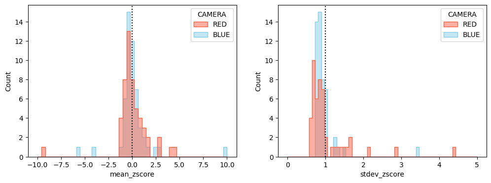
The mean flux in the sky-subtracted sky is significantly below zero, and the standard deviation of the sky is significantly below that expected from the errors. Both display a substantial number of outliers, which need investigating.
Let’s break it down by OB. Note that the extreme outliers make selecting the bandwidth for these plots difficult.
plot_dist(
stats_stack,
sigma_clip=5,
mean_range=(-10, 10),
stdev_range=(0.0, 5.0),
inner="stick",
)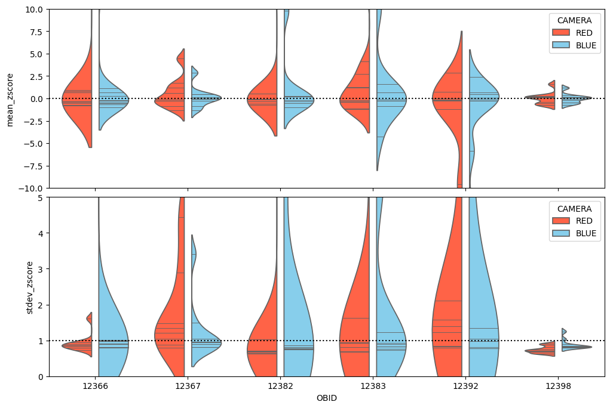
Single observations
dask_cluster = Client(n_workers=8, threads_per_worker=1, memory_limit="2GiB")
with dask_cluster as _:
stats_single = tests_single.stats.to_pandas()
stats_single = stats_single.drop(columns=["RUN", "NSPEC", "filename"]).dropna()
stats_single| CAMERA | MJD | NIGHT | OBID | stdev_measured | stdev_expected | mean_zscore | stdev_zscore | err_on_mean_zscore | err_on_stdev_zscore | sig_mean_zscore | sig_stdev_zscore | ks_prob | ||
|---|---|---|---|---|---|---|---|---|---|---|---|---|---|---|
| RUN | NSPEC | |||||||||||||
| 3050611 | 97 | RED | 60384.87280 | 20240315 | 12398 | 4.732673 | 10.332288 | 0.110196 | 0.620430 | 0.005187 | 0.003668 | 21.245287 | 103.487723 | 0.000000e+00 |
| 193 | RED | 60384.87280 | 20240315 | 12398 | 5.425674 | 10.377344 | 0.130211 | 0.580347 | 0.004852 | 0.003431 | 26.836056 | 122.309783 | 0.000000e+00 | |
| 375 | RED | 60384.87280 | 20240315 | 12398 | 12.930606 | 9.455182 | -0.464787 | 0.838622 | 0.007013 | 0.004959 | 66.273529 | 32.540965 | 0.000000e+00 | |
| 432 | RED | 60384.87280 | 20240315 | 12398 | 5.644597 | 11.092417 | 0.069947 | 0.593808 | 0.004966 | 0.003512 | 14.084639 | 115.666472 | 0.000000e+00 | |
| 467 | RED | 60384.87280 | 20240315 | 12398 | 6.891780 | 10.386356 | -0.331541 | 0.691167 | 0.005781 | 0.004088 | 57.349730 | 75.546990 | 0.000000e+00 | |
| ... | ... | ... | ... | ... | ... | ... | ... | ... | ... | ... | ... | ... | ... | ... |
| 3051215 | 491 | BLUE | 60386.98835 | 20240317 | 12392 | 11.595710 | 11.406978 | 1.408187 | 0.957842 | 0.010033 | 0.007095 | 140.360450 | 5.942263 | 0.000000e+00 |
| 503 | BLUE | 60386.98835 | 20240317 | 12392 | 35.203259 | 11.851339 | -3.080350 | 2.901796 | 0.030396 | 0.021494 | 101.341605 | 88.479513 | 0.000000e+00 | |
| 711 | BLUE | 60386.98835 | 20240317 | 12392 | 8.160785 | 10.654712 | -0.127563 | 0.806889 | 0.008466 | 0.005987 | 15.067002 | 32.255081 | 1.155737e-88 | |
| 806 | BLUE | 60386.98835 | 20240317 | 12392 | 139.362228 | 12.133641 | -6.953392 | 9.953850 | 0.104540 | 0.073925 | 66.514065 | 121.120491 | 0.000000e+00 | |
| 913 | BLUE | 60386.98835 | 20240317 | 12392 | 7.899908 | 10.707053 | 0.080167 | 0.752101 | 0.007908 | 0.005592 | 10.137305 | 44.329564 | 2.187225e-94 |
342 rows × 13 columns
plot_hist(stats_single, mean_range=(-10, 10), stdev_range=(0.0, 5.0))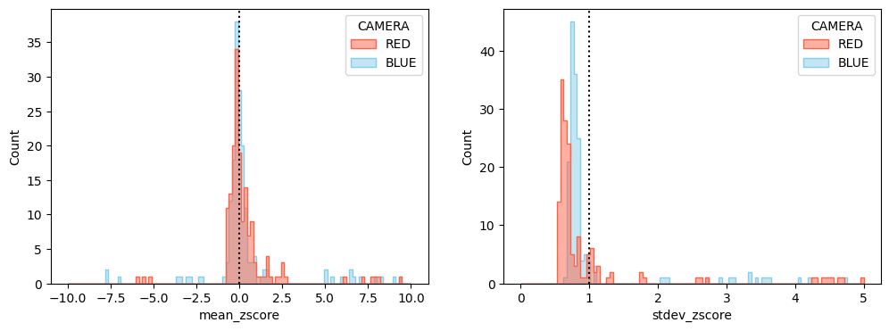
plot_dist(
stats_single,
sigma_clip=5,
mean_range=(-10, 10),
stdev_range=(0.0, 5.0),
inner="stick",
)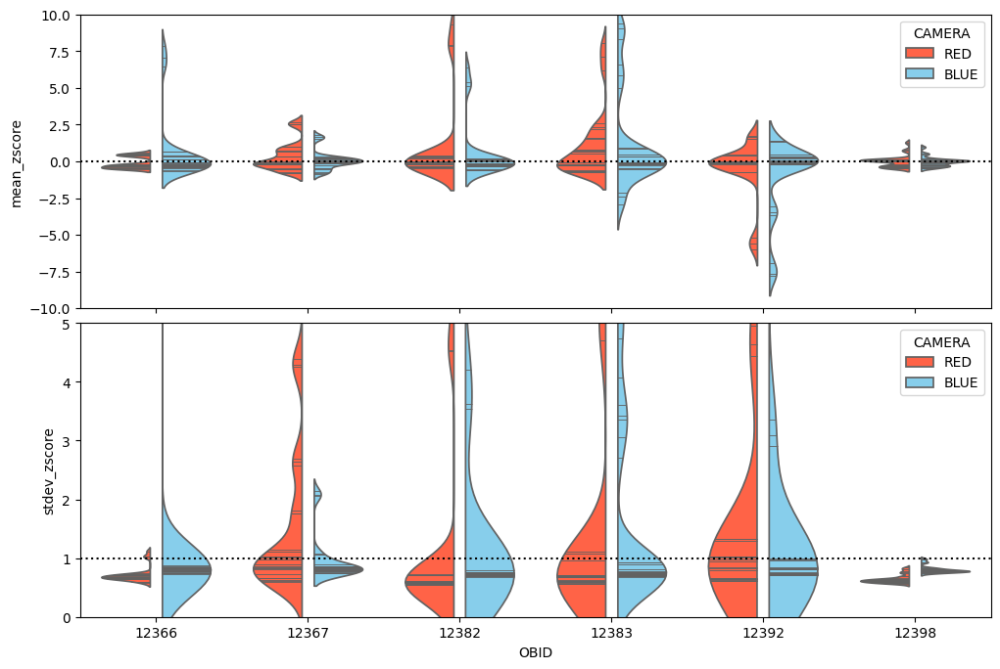
Compare noise level in stacks and singles
stack_over_single = (
stats_stack.set_index(["OBID", "CAMERA"])[["stdev_measured", "stdev_expected"]]
/ stats_single.set_index(["OBID", "CAMERA"])[["stdev_measured", "stdev_expected"]]
)stack_over_single = stack_over_single.dropna()
stack_over_single| stdev_measured | stdev_expected | ||
|---|---|---|---|
| OBID | CAMERA | ||
| 12366 | BLUE | 2.043285 | 1.709613 |
| BLUE | 2.935687 | 1.682709 | |
| BLUE | 2.904439 | 1.607477 | |
| BLUE | 2.325622 | 1.476084 | |
| BLUE | 3.100327 | 1.667831 | |
| ... | ... | ... | ... |
| 12398 | RED | 0.870969 | 1.555680 |
| RED | 1.817556 | 1.819420 | |
| RED | 1.600257 | 1.708372 | |
| RED | 1.642207 | 1.764194 | |
| RED | 1.413976 | 1.758083 |
3258 rows × 2 columns
plot_stack_over_single(stack_over_single)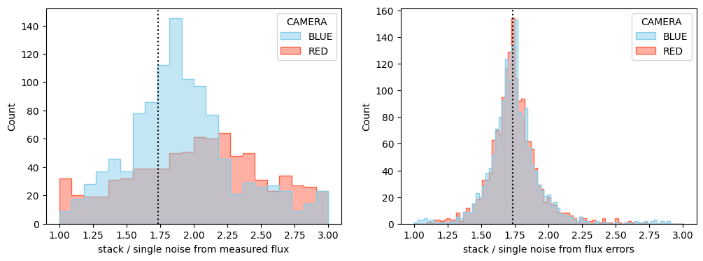
The noise increases by a factor of \(\sqrt{3}\), as expected for stacks that are the sum of three single exposures. However, there is sign of an additional contribution to the measured noise in the red stacks.
Data exploration
Here we examine the data a bit more closely.
First we define a function for visualising the spectra.
def plot(data, vmin=0, vmax=100, figsize=(15, 8), just_noss=False):
lamdim = [d for d in data.dims if d.startswith("LAMBDA")][0]
data = data.transpose(..., lamdim)
wl = data[lamdim]
wlmin, wlmax, dwl = wl[0], wl[-1], wl[1] - wl[0]
extent = (wlmin - 0.5 * dwl, wlmax + 0.5 * dwl, data["FLUX"].shape[0] + 0.5, +0.5)
nrow = 1 if just_noss else 3
fig, ax = plt.subplots(
nrow, 1, figsize=figsize, sharex=True, sharey=True, squeeze=False
)
ax = ax[:, 0]
ax[0].imshow(
data["FLUX_NOSS"],
vmin=vmin,
vmax=vmax,
interpolation="none",
aspect="auto",
extent=extent,
)
ax[0].set_title("FLUX_NOSS")
if not just_noss:
ax[1].imshow(
data["FLUX"],
vmin=vmin,
vmax=vmax,
interpolation="none",
aspect="auto",
extent=extent,
)
ax[1].set_title("FLUX")
ax[2].imshow(data["IVAR"], interpolation="none", aspect="auto", extent=extent)
ax[2].set_title("IVAR")
ax[-1].set_xlabel(r"wavelength ($\rm\AA$)")
plt.tight_layout()Also define a function which stacks all provided spectra along a single dimension, for the RED and BLUE cameras separately (since they have different numbers of pixels in the wavelength dimension).
def stack_spec(
data,
persist=False, # using persist=True makes interactive use faster for datasets that fit in memory
):
def stack_camera_spec(data, camera, drop_no_targuse=False):
data = data.sel(RUN=data.CAMERA == camera)
drop_band = "B" if camera == "RED" else "R"
data = data.drop_dims(f"LAMBDA_{drop_band}")
data = data.rename_vars(
{n: n.replace(f"{camera}_", "") for n in data.variables}
)
data = data.stack({"SPEC": ["RUN", "NSPEC"]})
if persist:
data = data.persist()
data = data.dropna("SPEC", how="all")
if drop_no_targuse:
no_use = data.TARGUSE.str.strip() != b""
data = data.sel(SPEC=no_use)
return data
return {camera: stack_camera_spec(data, camera) for camera in ("RED", "BLUE")}Now, lets look at all the spectra tagged as sky in the GA-CALIB data. We will focus on the RED camera for now.
skyspec = stack_spec(tests_single.data)plot(skyspec["RED"])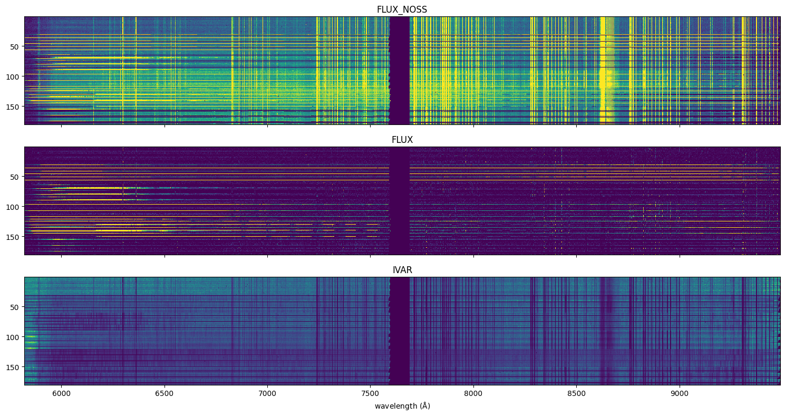
Clearly there are sources in some of these spectra. Is this contamination, or have I messed up identifying sky spectra?
Let’s take a look at a single run and compare spectra with different TARGUSE codes. We need to get the data again as we had discarded non-sky spectra previously.
files = get_weave_files(level="L1", lowres=True, filetype="single", folder="GA-CALIB")
data = read_l1_data(files)
fibre_table = read_fibre_table_nspec(files)
data = xr.merge((data, fibre_table))
data = data.swap_dims(filename="RUN")Locating and converting where necessary: 100%|██████████| 36/36 [00:00<00:00, 5036.35it/s]
Reading netCDF files... took 0.91 s. Size is 15887.744 Mb
Reading files: 100%|██████████| 36/36 [00:00<00:00, 59.62it/s]
Creating Dataset... took 0.13 s. Size is 14.210 MbWe’ll start by looking at a run with a fairly well behaved sky noise distribution. RUN 3050611 is in OBID 12398.
example_run = 3050611spec_all = stack_spec(data.sel(RUN=slice(example_run, example_run + 1)))
spec_all = spec_all["RED"]
spec_tar = spec_all.where(spec_all["TARGUSE"] == b"T", drop=True)
spec_cal = spec_all.where(spec_all["TARGUSE"] == b"C", drop=True)
spec_sky = spec_all.where(spec_all["TARGUSE"] == b"S", drop=True)First plot all the spectra in the RUN and indicate their TARGUSE.
plot(spec_all, vmax=1000, figsize=(15, 15), just_noss=True)
for ax in plt.gcf().axes:
nspec_tar = spec_tar.NSPEC
ax.plot([7640] * len(nspec_tar), nspec_tar, "_", markersize=15, color="red")
nspec_cal = spec_cal.NSPEC
ax.plot([7640] * len(nspec_cal), nspec_cal, "_", markersize=15, color="pink")
nspec_sky = spec_sky.NSPEC
ax.plot([7640] * len(nspec_sky), nspec_sky, "_", markersize=15, color="cyan")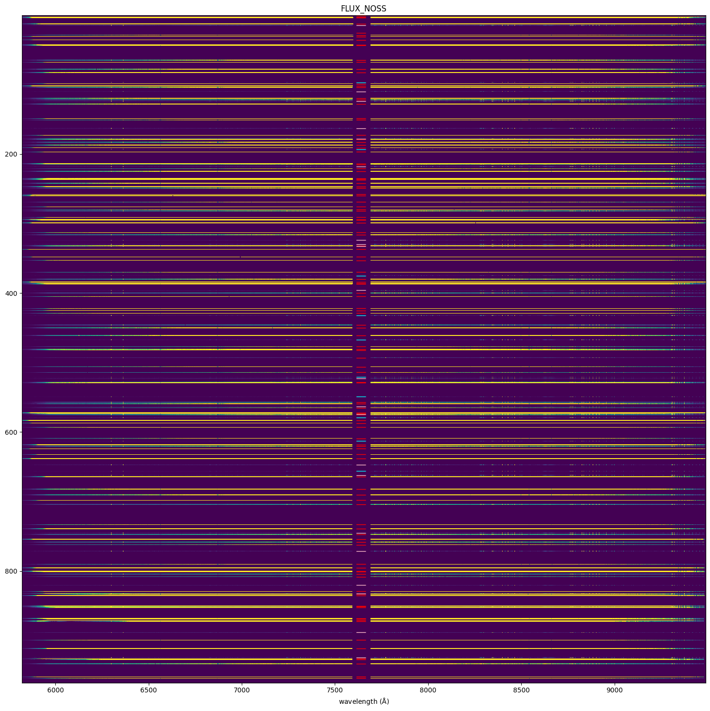
plot(spec_tar, vmax=10000, figsize=(15, 5), just_noss=True)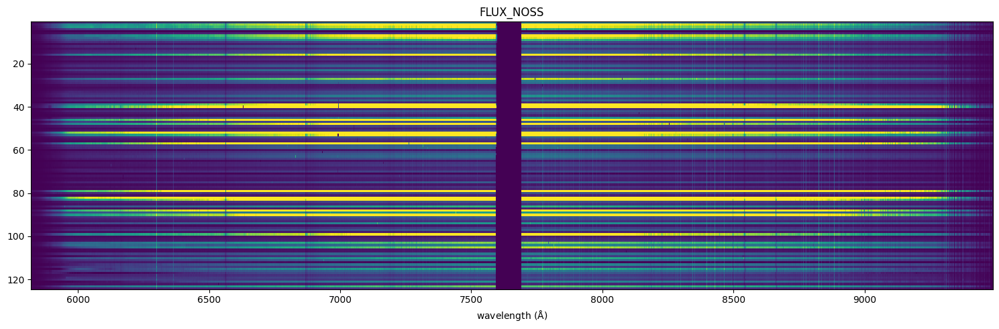
plot(spec_cal, vmax=100, figsize=(15, 2), just_noss=True)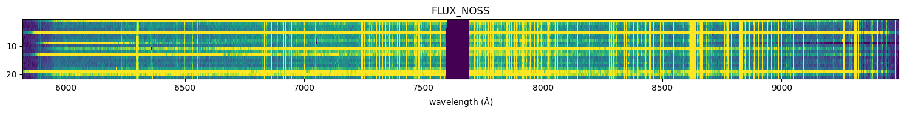
plot(spec_sky, vmax=100, figsize=(15, 2), just_noss=True)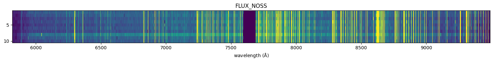
The sky spectra look pretty clean for that RUN. Now let’s try another. RUN 3050886 is in OBID 12367.
example_run = 3050886spec_all = stack_spec(data.sel(RUN=slice(example_run, example_run + 1)))
spec_all = spec_all["RED"]
spec_tar = spec_all.where(spec_all["TARGUSE"] == b"T", drop=True)
spec_cal = spec_all.where(spec_all["TARGUSE"] == b"C", drop=True)
spec_sky = spec_all.where(spec_all["TARGUSE"] == b"S", drop=True)First plot all the spectra in the RUN and indicate their TARGUSE.
plot(spec_all, vmax=1000, figsize=(15, 15), just_noss=True)
for ax in plt.gcf().axes:
nspec_tar = spec_tar.NSPEC
ax.plot([7640] * len(nspec_tar), nspec_tar, "_", markersize=15, color="firebrick")
nspec_cal = spec_cal.NSPEC
ax.plot([7640] * len(nspec_cal), nspec_cal, "_", markersize=15, color="pink")
nspec_sky = spec_sky.NSPEC
ax.plot([7640] * len(nspec_sky), nspec_sky, "_", markersize=15, color="cyan")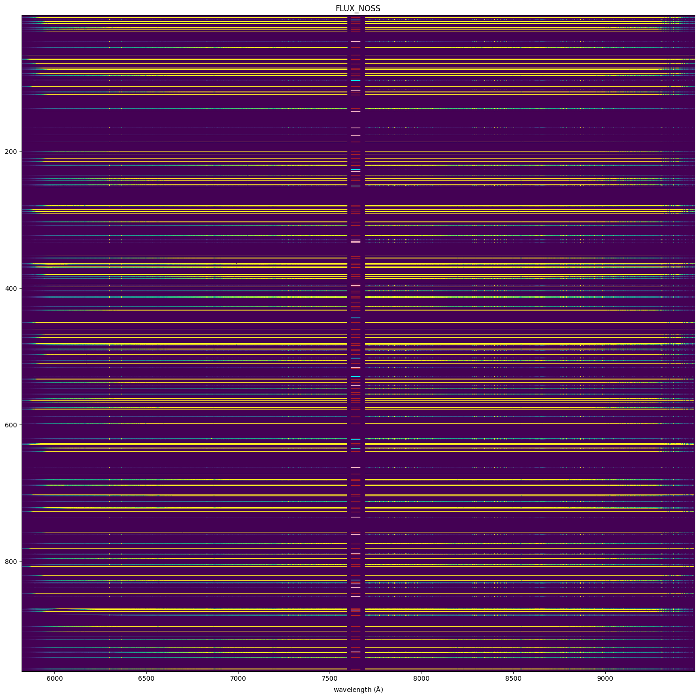
plot(spec_tar, vmax=10000, figsize=(15, 5), just_noss=True)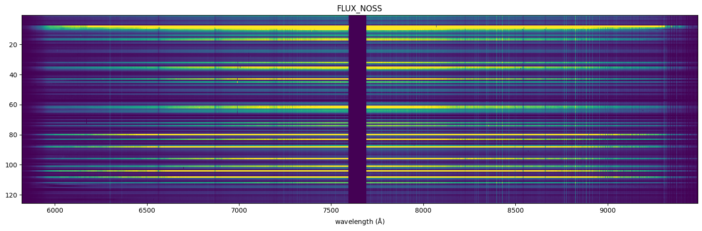
plot(spec_cal, vmax=100, figsize=(15, 2), just_noss=True)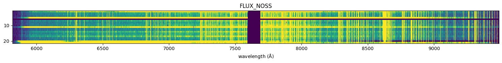
plot(spec_sky, vmax=100, figsize=(15, 2), just_noss=True)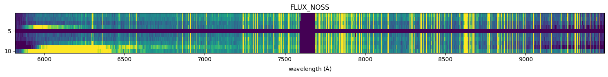
This time several of the sky spectra have contamination. The main difference betwen the two runs is that this one has sky spectra right next to target spectra on the CCD, suggesting that the contaimination is coming from neighbouring bright spectra.
We can try to examine the raw images to see if we see sign of signal contaminating neighbouring spectra.
files = get_weave_files(level="raw", lowres=True, folder="GA-CALIB")raw_data = read_raw_data(files)
raw_data = raw_data.swap_dims(filename="RUN")Locating and converting where necessary: 100%|██████████| 36/36 [00:00<00:00, 2242.61it/s]
Reading netCDF files... took 3.73 s. Size is 5336.749 Mbimg = raw_data.sel(RUN=3050886)["counts1"]Display a corner of the image.
plt.figure(figsize=(15, 15))
plt.imshow(img[:1000, :3000], vmin=1510, vmax=1700)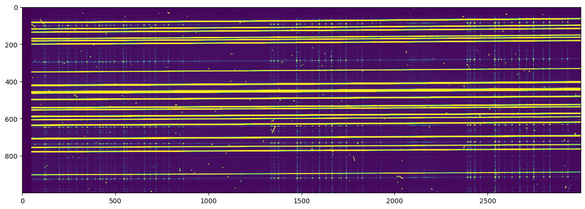
Plot a slice across the spectra roughly at the position of a sky line. It looks like the spectra are close enough for a bright neighbour to cause contamination.
fig = plt.figure(figsize=(15, 5))
plt.plot(img[250:750, 1476])
plt.ylim(ymin=1500, ymax=10000)
plt.yscale("log")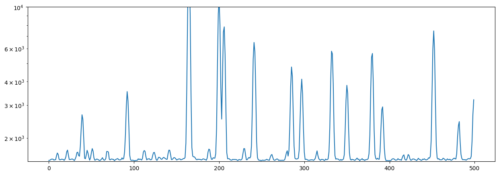
For the purposes of the test, we could do with a way of rejecting contaminated sky spectra.